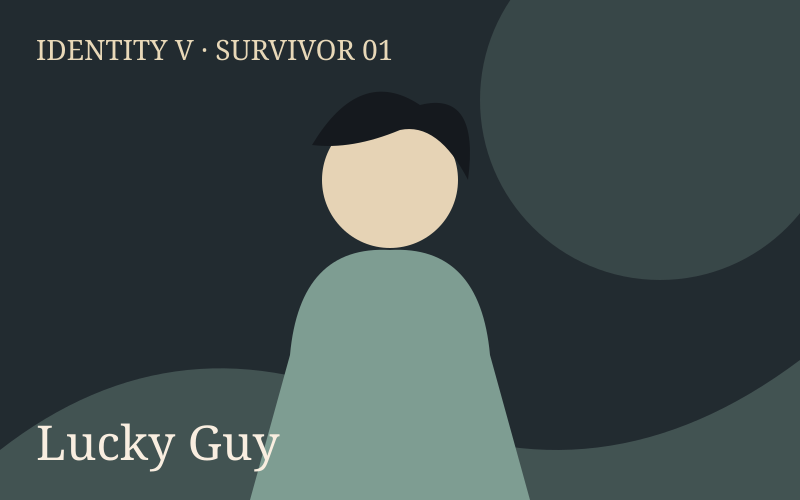
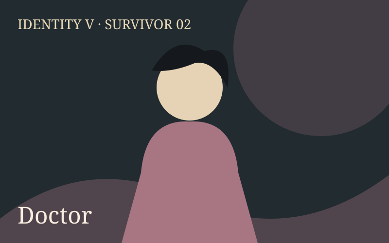
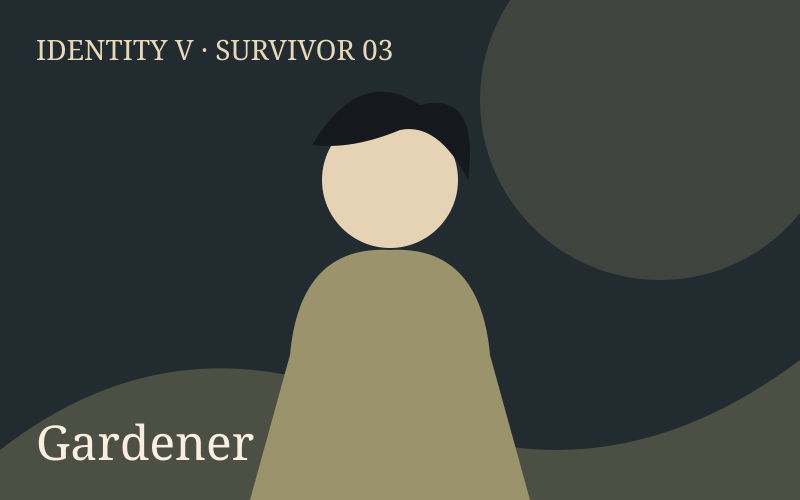
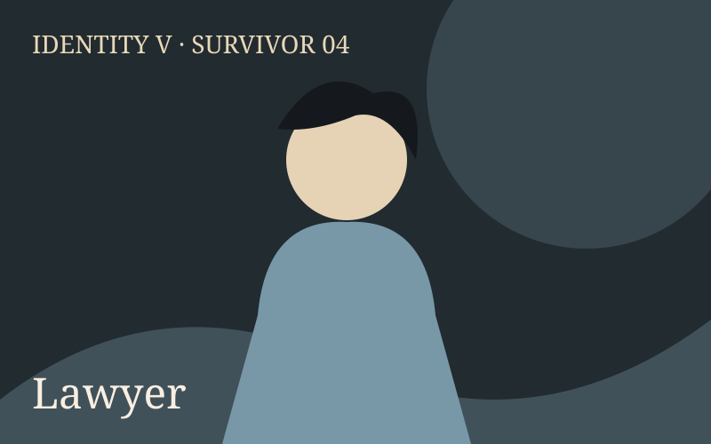
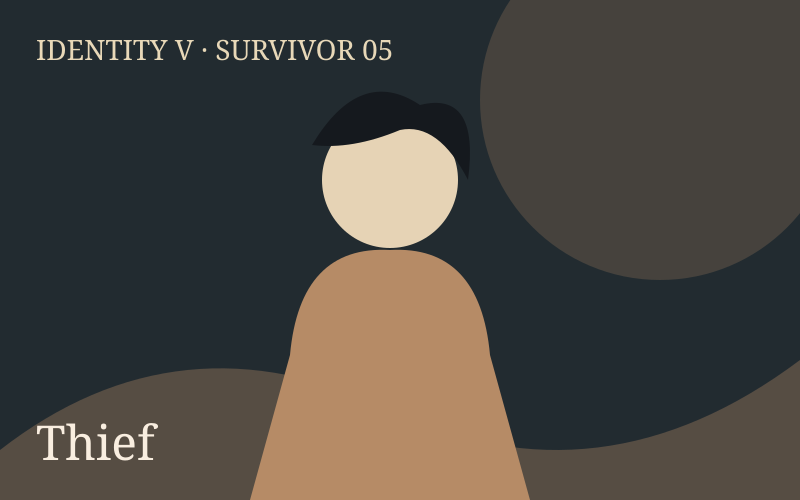
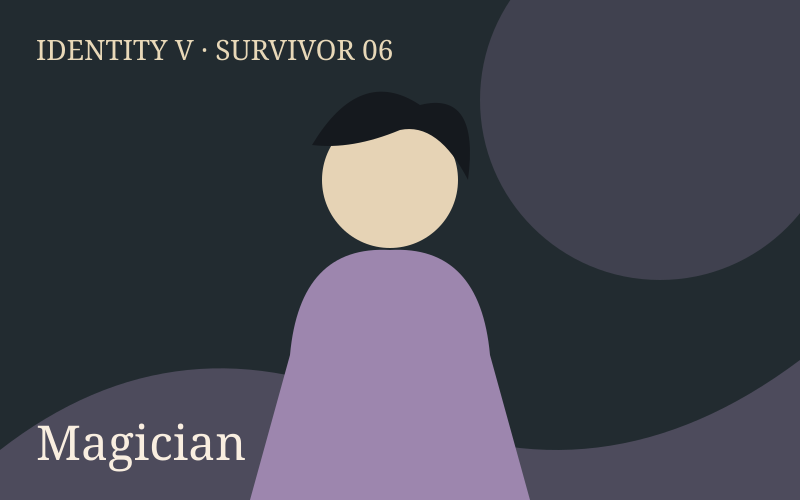

Lucky Guy
Wishes for an item before opening a chest, increasing the chance of finding it.
Details: Supply Finder
Search chests early and bring a useful item to support the team.
Meet six survivors, learn their strengths, and prepare for your first match.

Wishes for an item before opening a chest, increasing the chance of finding it.
Search chests early and bring a useful item to support the team.

Can heal herself and other survivors, making her helpful for new players.
Heal in a safe location and avoid rescuing while injured.

Can dismantle rocket chairs, though timing and positioning matter.
Learn safe routes before approaching a chair.

Uses a map to locate important objectives and understand the match.
Use map information to choose a safer cipher machine.

Uses a flashlight to pressure the hunter when positioned carefully.
Practice movement and avoid standing still to aim.

Creates an illusion to distract the hunter during a chase.
Save the illusion for a corner or a moment with cover.